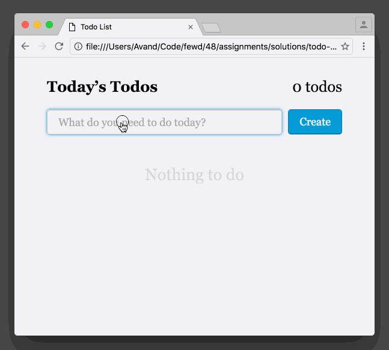

Todo List
A picture is worth a thousand words...

Let's break it down.
Start with HTML and CSS
For this assignment you'll be starting from scratch to force you to keep your CSS
skills sharp. Don't even touch the JS until you've got the UI built. Put some todos on the page
with HTML and use an <input type="checkbox"> to make them checkable.
This is a great chance to use a label and some advanced to CSS to create the desired affect.
I would recommend the following markup for each todo:
That extra <span> allows you to do something clever.
Use the :checked pseudo-class
and the adjacent sibling selector to
cross out checked items:
Don't get too hung up on this. It's fine if checking an item doesn't cross it out.
JavaScript
Once you know exactly what the markup for each todo looks like, you should probably
write a function that can make one and append it to the page—I don't know, maybe you call it
addTodo() and pass in the text you want to appear. The function isn't
entirely necessary but start by writing the code that makes a todo appear and work your way backwards.
When the todo list form is submitted:
- Remove the element that says "Nothing to do". Can you think of how to do this? Think about what CSS property you can set that makes something disappear. Can you apply that rule via CSS?
-
Run the code that makes a todo, using the input's value as the
textContent. Nothing new here! - Update the number of total todos in the upper right. You can do this a few ways so I'll let you solve this problem on your own too.